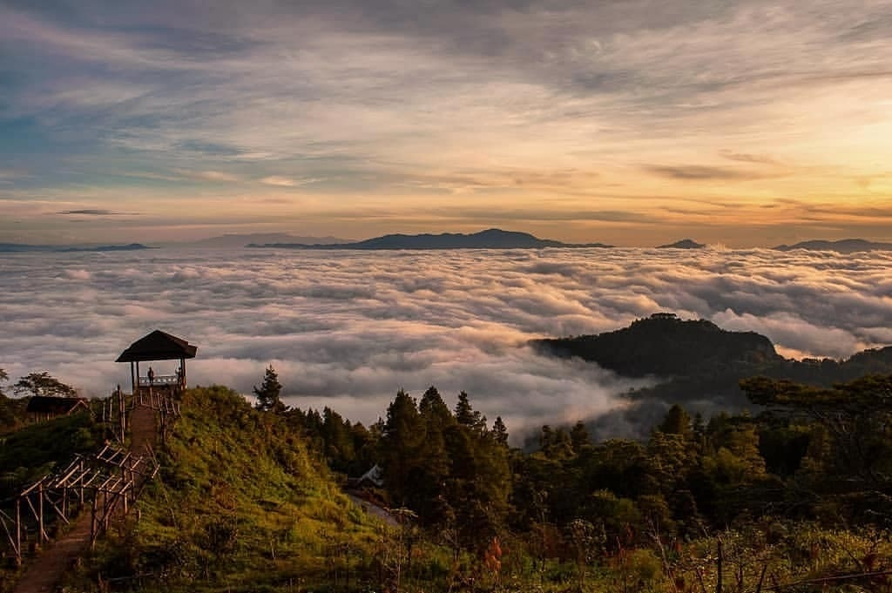
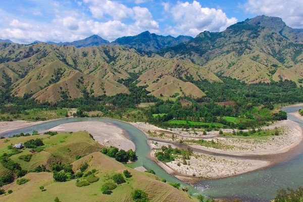
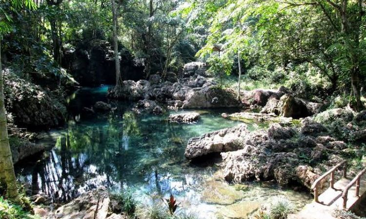
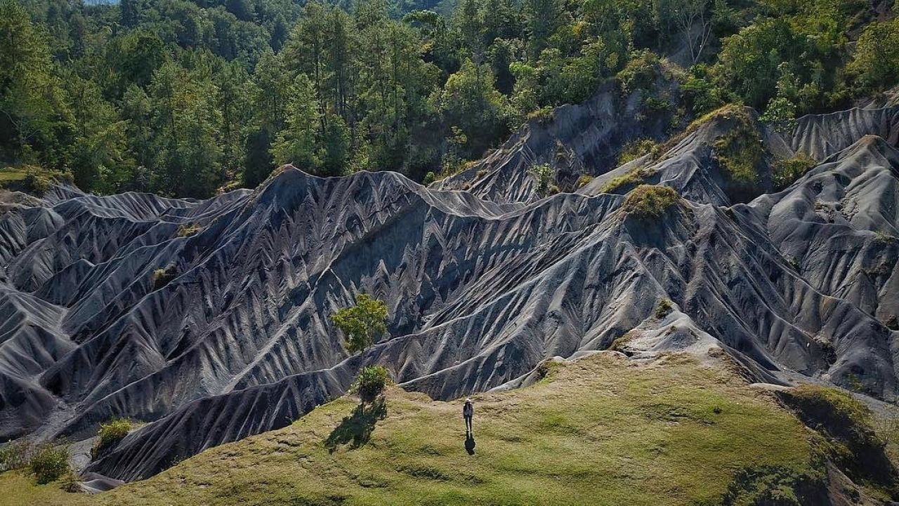
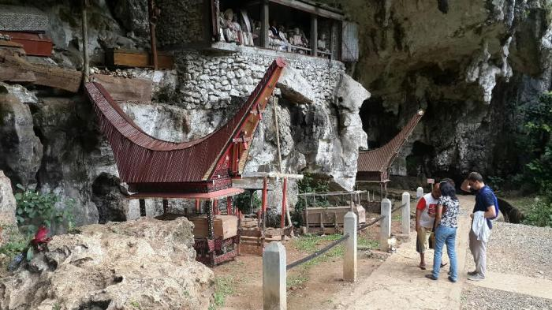
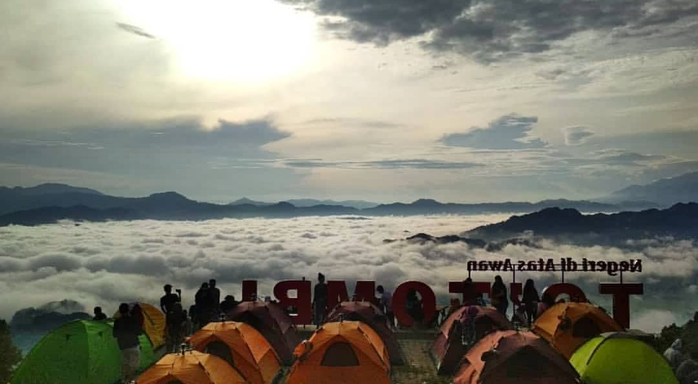

Pango Pango Makale
Pango Pango adalah sebuah destinasi wisata alam yang menakjubkan di Makale, Toraja Selatan. Terkenal dengan julukan "Negeri di Atas Awan", tempat ini menawarkan pemandangan spektakuler dan pengalaman yang tak terlupakan bagi pengunjungnya.
Daya tarik utama Pango Pango adalah pemandangan lautan awan yang memukau, terutama di pagi hari. Pengunjung dapat menikmati sunrise yang menakjubkan, trekking di alam bebas, atau sekadar bersantai menikmati keindahan alam dari ketinggian. Area ini sangat populer untuk fotografi landscape dan camping.
Lokasi: Kelurahan Bombongan, Kecamatan Makale, Kabupaten Tana Toraja, Sulawesi Selatan
Aktivitas: Menikmati pemandangan awan, trekking, fotografi, camping
Waktu Terbaik untuk Berkunjung: Pagi hari untuk melihat sunrise dan lautan awan
Tiket Masuk: Rp 10.000 - Rp 20.000 per orang (harga dapat berubah)
Catatan: Akses menuju lokasi membutuhkan trekking ringan. Pastikan untuk membawa perlengkapan yang sesuai, termasuk jaket hangat, dan menjaga kebersihan lingkungan.
Lembah Ollon Toraja
Lembah Ollon adalah salah satu destinasi wisata alam yang memukau di Toraja. Terletak di Kecamatan Tanete, Tana Toraja, lembah ini menawarkan pemandangan alam yang menakjubkan dengan hamparan sawah bertingkat yang luas.
Daya tarik utama Lembah Ollon adalah panorama sawah terasering yang membentang sejauh mata memandang, dikelilingi oleh perbukitan hijau. Tempat ini menjadi surga bagi pecinta fotografi landscape dan mereka yang mencari ketenangan di tengah alam.
Lokasi: Kecamatan Tanete, Kabupaten Tana Toraja, Sulawesi Selatan
Aktivitas: Fotografi, trekking, menikmati pemandangan alam
Waktu Terbaik untuk Berkunjung: Pagi hari atau menjelang sore untuk mendapatkan pencahayaan terbaik
Tiket Masuk: Gratis (dapat berubah)
Catatan: Akses menuju lokasi cukup mudah dengan kendaraan. Pastikan untuk menghormati lingkungan dan masyarakat setempat saat berkunjung.
Kolam Renang Alam Tilanga
Kolam Renang Alam Tilanga adalah destinasi wisata air yang menyegarkan di Toraja. Terletak di Desa Tilanga, Kecamatan Buntao', Kabupaten Toraja Utara, kolam ini menawarkan pengalaman berenang di tengah alam yang asri.
Daya tarik utama Tilanga adalah air jernihnya yang berasal langsung dari mata air pegunungan. Pengunjung dapat menikmati kesegaran air alami sambil menikmati pemandangan alam sekitar yang indah.
Lokasi: Desa Tilanga, Kecamatan Buntao', Kabupaten Toraja Utara, Sulawesi Selatan
Aktivitas: Berenang, piknik, fotografi
Waktu Terbaik untuk Berkunjung: Pagi hingga sore hari
Tiket Masuk: Rp 5.000 - Rp 10.000 per orang (harga dapat berubah)
Catatan: Fasilitas di sekitar kolam masih terbatas. Disarankan untuk membawa makanan dan minuman sendiri. Jaga kebersihan area dan hormati alam sekitar.
Gumuk Pasir Toraja
Gumuk Pasir Toraja adalah destinasi wisata unik yang menawarkan pemandangan padang pasir mini di tengah keindahan alam Toraja. Terletak di Desa Palipu, Kecamatan Mengkendek, Kabupaten Tana Toraja, tempat ini menjadi daya tarik bagi wisatawan yang ingin melihat fenomena alam yang tidak biasa di Sulawesi.
Daya tarik utama Gumuk Pasir Toraja adalah bentang alam pasir yang kontras dengan perbukitan hijau di sekitarnya. Pengunjung dapat menikmati pemandangan eksotis, berfoto, atau bahkan mencoba sandboarding di area ini.
Lokasi: Desa Palipu, Kecamatan Mengkendek, Kabupaten Tana Toraja, Sulawesi Selatan
Aktivitas: Fotografi, sandboarding, menikmati pemandangan
Waktu Terbaik untuk Berkunjung: Pagi atau sore hari untuk menghindari terik matahari
Tiket Masuk: Rp 5.000 - Rp 10.000 per orang (harga dapat berubah)
Catatan: Disarankan untuk membawa air minum yang cukup dan topi untuk perlindungan dari sinar matahari. Jaga kebersihan area dan hindari merusak formasi pasir alami.
Kuburan Londa Toraja
Kuburan Londa adalah salah satu situs pemakaman kuno yang paling terkenal di Toraja. Terletak di Desa Sandan Uai, Kecamatan Sanggalangi, Kabupaten Tana Toraja, tempat ini menawarkan pengalaman budaya yang unik dan mendalam.
Daya tarik utama Londa adalah gua pemakaman alami dengan peti mati kuno yang digantung di tebing batu. Pengunjung dapat melihat tau-tau (patung kayu yang merepresentasikan orang yang telah meninggal) dan mempelajari tradisi pemakaman Toraja yang kaya.
Lokasi: XVPG+483, Lembang Sangbua, Kesu, Tadongkon, Kec. Kesu, Kabupaten Toraja Utara, Sulawesi Selatan
Aktivitas: Tur budaya, fotografi, belajar tentang tradisi Toraja
Waktu Terbaik untuk Berkunjung: Pagi hingga sore hari
Tiket Masuk: Rp 20.000 - Rp 30.000 per orang (harga dapat berubah)
Catatan: Pengunjung disarankan untuk menghormati situs pemakaman ini. Gunakan jasa pemandu lokal untuk mendapatkan informasi yang lebih mendalam. Berhati-hatilah saat berjalan di area gua karena dapat licin.
Lolai To'tombi
Lolai To'tombi, juga dikenal sebagai "Negeri di Atas Awan", adalah destinasi wisata alam yang memukau di Toraja. Terletak di Desa Pango-Pango, Kecamatan Rantepao, Kabupaten Toraja Utara, tempat ini menawarkan pemandangan spektakuler dari ketinggian.
Daya tarik utama Lolai To'tombi adalah panorama lautan awan yang menakjubkan, terutama saat matahari terbit. Pengunjung dapat menikmati keindahan alam yang luar biasa, udara segar pegunungan, dan momen-momen magis saat fajar menyingsing.
Lokasi: Desa Pango-Pango, Kecamatan Rantepao, Kabupaten Toraja Utara, Sulawesi Selatan
Aktivitas: Menikmati sunrise, fotografi, trekking ringan
Waktu Terbaik untuk Berkunjung: Dini hari hingga pagi hari untuk melihat sunrise dan lautan awan
Tiket Masuk: Rp 10.000 - Rp 15.000 per orang (harga dapat berubah)
Catatan: Pastikan untuk datang lebih awal (sekitar pukul 3-4 pagi) untuk mendapatkan spot terbaik. Bawa jaket hangat karena suhu bisa sangat dingin di pagi hari. Jaga kebersihan area dan hormati lingkungan sekitar.